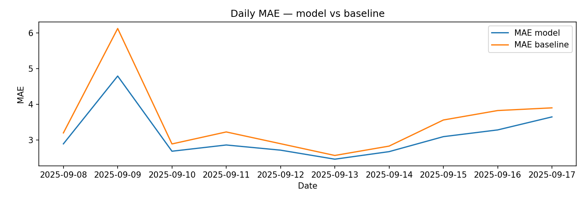
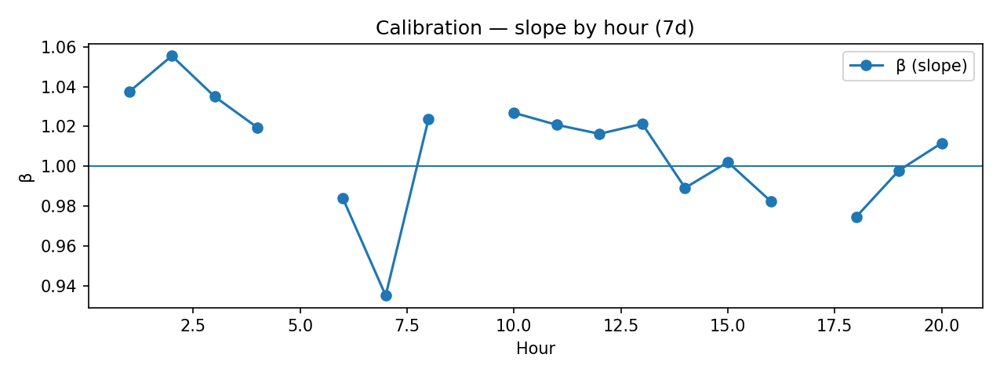
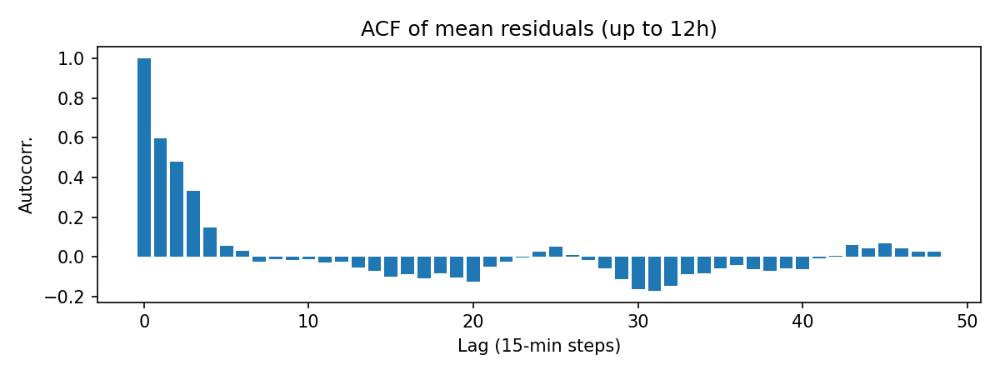
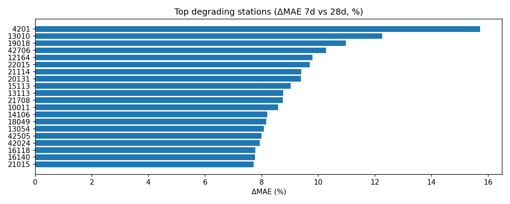

Santé du modèle¶
Objectif. Surveiller la performance dans le temps, la calibration et la couverture des prédictions, pour décider d’un ré-entraînement ou d’un fallback.
Questions auxquelles la page répond¶
- L’erreur (MAE/RMSE) se dégrade-t-elle ? Où (heures, clusters, zones) ?
- Le lift vs baseline reste-t-il positif et stable ?
- La calibration est-elle correcte globalement et par segments ?
- La couverture (
% y_preddisponible) est-elle conforme ?
Indicateurs clés¶
- MAE / RMSE / biais par jour et par segments (heure, station, cluster, zone).
- Lift vs persistance =
(MAE_base − MAE_model) / MAE_base. - Calibration : pente/intercept
y_true ~ y_pred(global & segments). - Couverture prédictive : part d’horodatages avec
y_pred. - Stabilité résiduelle : variance des résidus, auto-corrélation.
Résumé rapide (fenêtres récentes)¶
- Fenêtre 7j — MAE: 2.892, Lift: 0.091, Couverture: 75.40%
- Fenêtre 28j — MAE: 2.952, Lift: 0.100, Couverture: 75.45%
- Dernier jour — Couverture prédictive: 75.79%
- Alertes : Dégradation — · Couverture — · Calibration ⚠️ · Fallback — · Gating retrain —
Plage temporelle analysée : 2025-09-07T23:00:00 → 2025-09-17T17:45:00 (timezone: Europe/Paris) · Horizon: 60 min · Série quotidienne exportée: 14 jours
Visualisations¶
Séries (MAE / lift / couverture)¶



Calibration (pente β par heure, 7j)¶

Stabilité des résidus¶

Top stations en dégradation¶

Carte d’erreur (7 derniers jours)¶
Ouvrir la carte dans un nouvel onglet ↗
Téléchargements & tables¶
- Fenêtres :
../../assets/tables/monitoring/model_health/window_metrics.csv - Jours :
../../assets/tables/monitoring/model_health/daily_metrics.csv - Segments 7j : stations
../../assets/tables/monitoring/model_health/error_by_station_7d.csv, heures../../assets/tables/monitoring/model_health/error_by_hour_7d.csv, clusters../../assets/tables/monitoring/model_health/error_by_cluster_7d.csv - Calibration : global
../../assets/tables/monitoring/model_health/calibration_global_7d.csv; par heure../../assets/tables/monitoring/model_health/calibration_by_hour_7d.csv - Couverture :
../../assets/tables/monitoring/model_health/coverage_j1_j7_j28.csv - ACF résidus :
../../assets/tables/monitoring/model_health/residuals_acf.csv - Top dégradations :
../../assets/tables/monitoring/model_health/top_degrading_stations.csv - Synthèse alertes :
../../assets/tables/monitoring/model_health/alerts_summary.csv
Seuils / Politiques (par défaut)¶
- Dégradation : MAE_7j − MAE_28j > 10 % et lift_7j < lift_28j − 5 pts → Alerte.
- Couverture : < 99 % sur J-1 → Alerte.
- Calibration : |pente−1| > 0,1 ou |intercept| > 0,5 → Alerte.
- Gating ré-entraînement : 3 alertes “Dégradation” sur 10 jours → Planifier retrain.
- Fallback : couverture < 95 % ou lift < 0 sur 3 jours → activer baseline le temps du correctif.
Limites — La performance agrégée peut masquer des poches locales de dégradation → toujours lire les découpages.